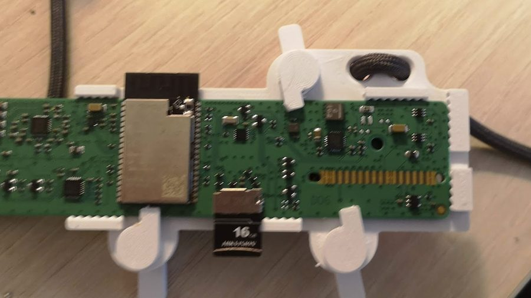
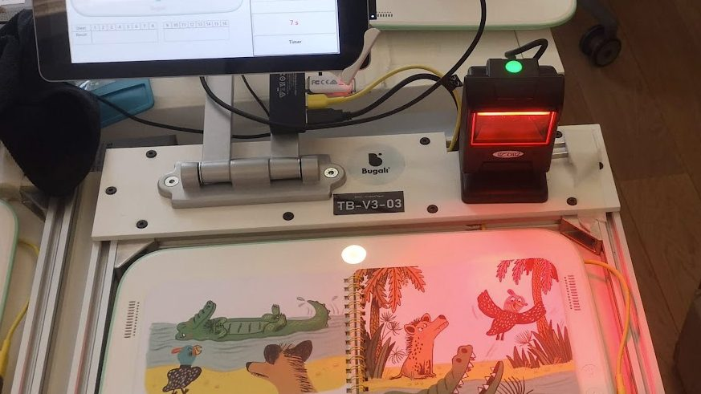

Outils & bancs de test
Des consoles de série sans port de debug, des livres par centaines de milliers.
Pour industrialiser la console, j’ai imaginé et conçu ces outils avec le lab : cartes électroniques, assemblage, définition des fonctionnalités et, souvent, le logiciel. En réutilisant au maximum des briques éprouvées — des outils développés vite, et robustes.
Les outils
Toute la chaîne : le développement, la présérie, l’usine et l’imprimeur.

Module de programmation & debug
Se connecte sur la main board pour ajouter un port de communication aux consoles industrialisées, qui n’en ont pas.

Banc de test livre V2 — imprimeur
Connecté aux serveurs Bugali, interface LabVIEW. Plus complet que la V1, après les bugs rencontrés en production.
Banc de test présérie
Teste un maximum de fonctions de la carte principale. Conception du PCB et du soft Arduino.
Banc de compression zebra
Qualification des connecteurs zebra — liaison par compression — pour la production. Modulable : teste les zebras et les PCBs.
Banc de validation produit
Spécification de l’interface LabVIEW, validation des dalles tactiles et du collage.
Et aussi
Module audio sans tactile pour l’étude de la sortie audio · banc de contrôle des boîtes de livres fermées, pour vérifier les 50 000 premiers livres sans les déballer · spécification d’une interface BLE Chrome pour les tests.